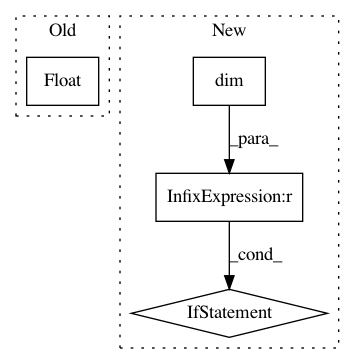

5e46e590db971af21d1c71260ce885431718e2d3,inferno/extensions/metrics/categorical.py,CategoricalError,forward,#CategoricalError#Any#Any#,13
Before Change
else:
// Multiclass classificiation
_, predicted_class = torch.max(prediction, 1)
incorrect = predicted_class.squeeze(1).type_as(target).ne(target).float()
if self.aggregation_mode == "mean":
return incorrect.mean()
else:
return incorrect.sum()
After Change
else:
// Multiclass classificiation
_, predicted_class = torch.max(prediction, 1)
if predicted_class.dim() == prediction.dim():
// Support for Pytorch 0.1.12
predicted_class = predicted_class.squeeze(1)
incorrect = predicted_class.type_as(target).ne(target).float()
if self.aggregation_mode == "mean":
return incorrect.mean()
else:
In pattern: SUPERPATTERN
Frequency: 3
Non-data size: 4
Instances
Project Name: inferno-pytorch/inferno
Commit Name: 5e46e590db971af21d1c71260ce885431718e2d3
Time: 2017-08-25
Author: nasim.rahaman@iwr.uni-heidelberg.de
File Name: inferno/extensions/metrics/categorical.py
Class Name: CategoricalError
Method Name: forward
Project Name: rusty1s/pytorch_geometric
Commit Name: 5e4bcd2876408cc4fabfaee595928306f90f555d
Time: 2018-05-07
Author: matthias.fey@tu-dortmund.de
File Name: torch_geometric/transform/target_indegree.py
Class Name: TargetIndegree
Method Name: __call__
Project Name: ncullen93/torchsample
Commit Name: 943753c968fe7c0cbafc6e44d60f1b28b42e997b
Time: 2017-05-03
Author: ncullen.th@dartmouth.edu
File Name: torchsample/utils.py
Class Name:
Method Name: th_affine2d